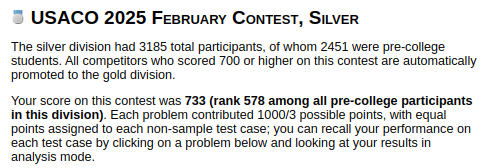
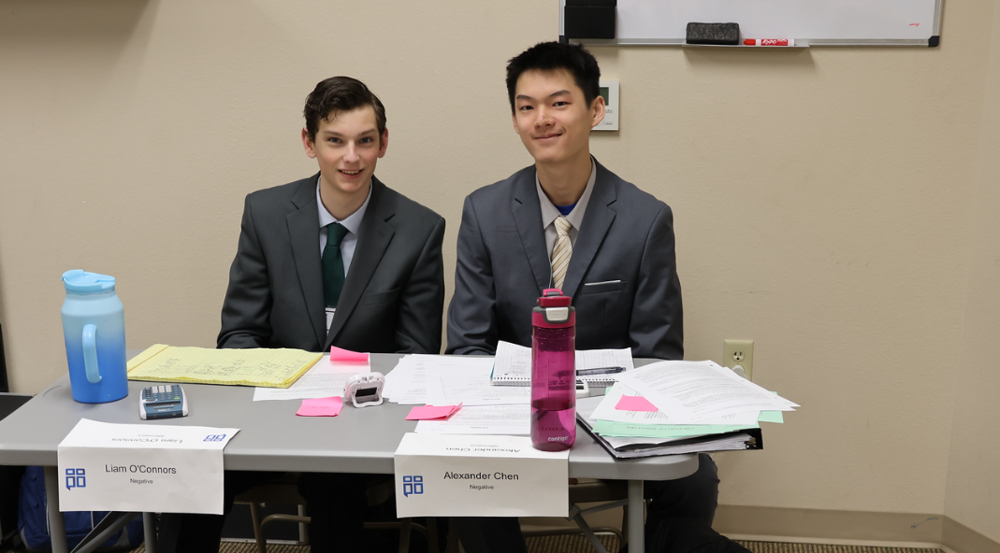
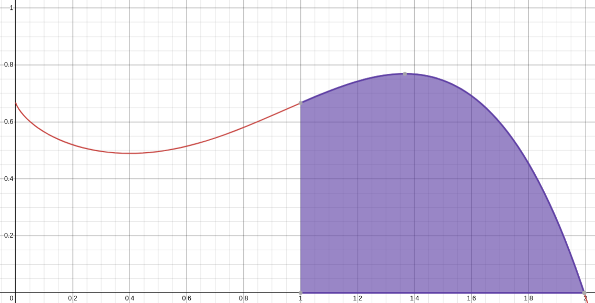
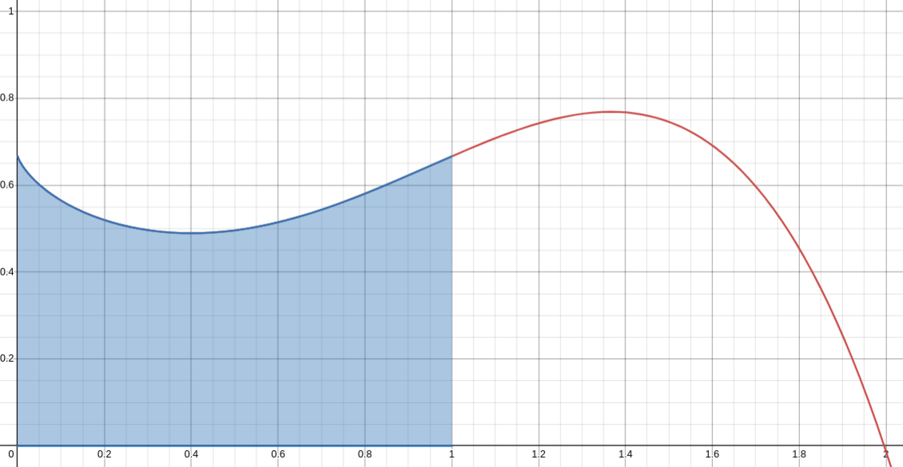
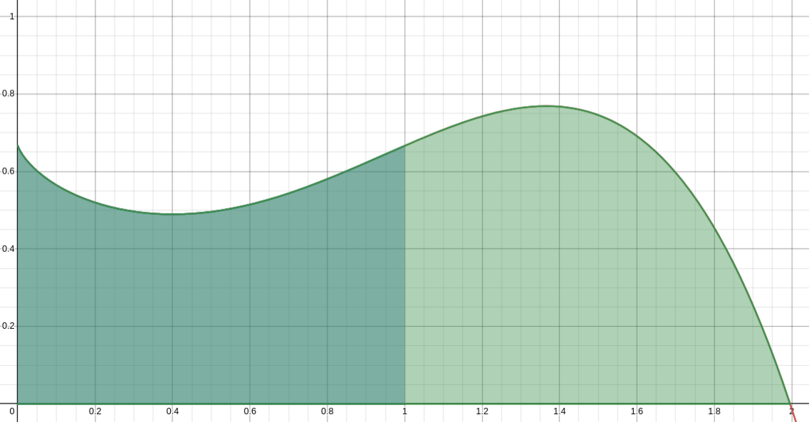
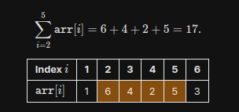
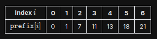
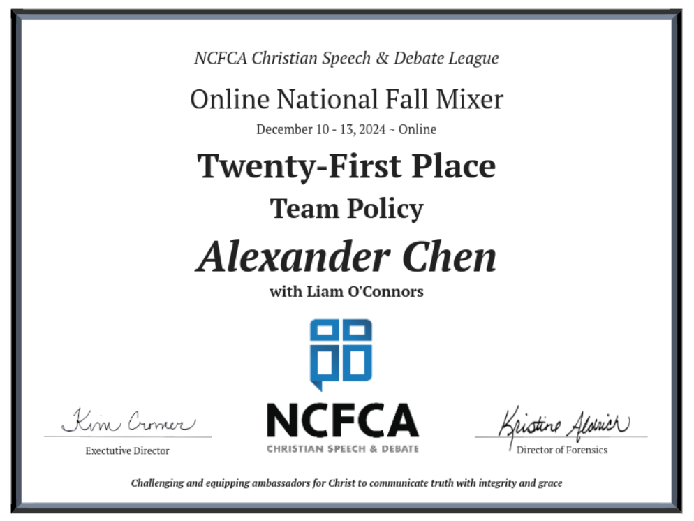

Last year I promoted to Silver in my first USACO contest as a high school freshman; this February, I promoted to Gold.
I scored 733/1000 in the Feb. 2025 USACO contest, placing 578 out of the 2451 pre-college competitors
world-wide competing in the silver division. I solved problems 1 and 2 completely and wrote a partial solution
for problem 3, pulling together enough points to advance.
This contest was quite a ride.
In preparation for competing in the Silver division, I started learning C++.
Previously, I had only used Python in CP, but as speed became more critical in higher divisions, Python needed to be replaced.
By the February contest I knew enough C++ to write full solutions, but I still stuck with Python to start the contest
(since it's much quicker to write, more readable, and I was more used to writing code in it).
In-contest... I solved problem 1 with a correct Python solution, and moved on to begin working on problem 2.
After brainstorming, pseudo-coding, and testing a solution, I implemented it in Python and submitted it to the grader.
Just a couple test cases were missed, due to time-limit-exceeded.
I was confused for a bit as I tried to figure out how I could optimize my solution; I had written one
that should have had a good enough time complexity to pass the test cases.
After struggling for a little more, I gave up and moved on to tackle problem 3, hoping to come back to it later.
Coming back after implementing my partial solution for problem 3, it finally clicked to me that perhaps
I had the right solution, but it was just Python which was too slow.
It was unlikely (this had only happened a few times in my practice before the official contests and the problems were
written to try to guarantee proper support for all languages), but I knew I might as well give the idea a shot.
Quickly, I translated my Python solution line-by-line into C++.
I submitted the program.
The same testcases solved by my Python solution turned green.
Then finally, I saw the rest of the test-cases pass successfully too.
These last couple test-cases gave me enough points to make the cutoff and advance.
USACO has been an extremely valuable part of my CS education, and I'm looking forward
to continuing my studies in more advanced topics while shooting for USACO Platinum!
Also, as a side-quest I reached 3000 in puzzle rating on chess.com :D

Last week was amazing in Flint, TX, for our first region qualifier in NCFCA this year.
My partner and I advanced to semifinals, and placed 4th out of the 24 competing team policy teams.
I placed 7th overall Team Policy speaker.
I also placed 11th overall in the Persuasive speech category, and 16th in the Apologetics category;
it was my first time competing in both categories.
This tourney was a great experience, and we're excited to see how the year continues!

I'm taking AP Calculus AB+BC this year, and recently I studied the 1st Fundamental Theorem of Calculus:
This theorem felt surprisingly familiar to me when I first learned it. I realized it was because I had
studied the same idea in computer science, when I learned how to use prefix sum arrays.
The FTC-1 can be explained in words as: to find the area under a function's curve (i.e. sum of values) from
`a` to `b` is the area under the curve from `0` to `b` minus the area under the curve from `0` to `a`.
This idea of finding the sum of a range by computing the sum of a larger range and then
subtracting the "extra" range at the start is the same utilized by prefix sums. Here are two visualizations
to demonstrate the correlation between the FTC-1 & prefix sums (also explained below).
Say we have a function `f(x)`, graphed as such:
And we wanted to find the area under the curve from `x = 1` to `x = 2`.

We can find this area using the FTC-1. First, we find the area from `x = 0` to `x = b, i.e. 2`; this is `F(b)`
(`F(x)` is the anti-derivative of `f(x)`):
Then we find the area from `x = 0` to `x = a i.e. 1`; this value is `F(a)`:

We can now simply subtract these two areas (subtract blue from green, i.e. `F(b) - F(a)`) to achieve the desired area:

This concept is exactly the same as that used by prefix sums. Let's say we have 1-based index array defined below,
and wanted to, repeatedly, find the sum of values in a range. For example, let's say the values from
index 2 to index 5 (inclusive):

We could, for every query, naively iterate through the target range and sum up all the values, but this
approach's runtime is `O(N * Q), where N = len(array) & Q = nof queries`. We can speed this up to `O(Q)` using
prefix arrays. Let's examine a formula to represent the sum of a range:
Using this observation, and the same concept of the FTC-1, we can pre-compute what's called the "prefix array":
an array, where the value at index `i` is the sum of all the values from the start of the original array
to the value at `i` (inclusive). Here's what the prefix array of our example array would look like:

Using this prefix array, we can easily perform a subtraction of the sum of the "overarching" range and the
"extra" range which isn't in our target range. From the above formula, we can now compute the sum of our target
range in `O(1)` time. Here's the formula, which is very similar to the one of FTC-1:
Now, for example, for our range from index 2 to index 5, we can simply perform the following to find our desired sum:
This is a cool cross-over I found and wanted to share while studying the two fields of computer science and mathematics,
showing how interconnected they are and the shared underlying concepts beneath them.
Acknowledgements:
Ms. Henderson (NCSSM); my Calculus teacher for teaching me the 1st Fundamental Theorem of Calculus.
Desmos; used to draw graphs for the FTC-1 visualization.
USACO Guide; for the prefix sum visualization.
Liam O'Connors (my partner this year) and I have gotten off to a strong start this year's team policy debate season.
At the first online tournament, we made it to elimination rounds, placing 21st out of ~80 teams.
I also placed as the second overall team policy speaker.
The debate resolution for this year focuses on U.S. foreign policy towards Central America, targeting
important issues like migration, smuggling, and corruption.
This'll be a fun second year in NCFCA for me, and I'm looking forward to competing more!


I'm excited to announce I've accepted an internship offer as an
Enterprise Technology Software Engineer @ State Farm for the summer of 2025!
A huge thanks to the people who've helped me along the way: to Dr. Veerasamy &
Professor Gupta @ UTDallas for recommendations & guidance in my CS education,
and especially to my parents for the encouragement and advice.
This is the first summer internship I've taken, and I'm thrilled for this opportunity
to start my journey in the industry!
“While at a conference a few weeks back, I spent an interesting evening with a grain of salt.”
This was one of many nonsensical phrases posted by the user “Mark V. Shaney” on Usenet in the 1980s.
Many readers thought Mark was a deranged person, but he was actually a program designed by Rob Pike.
Pike’s program was an early form of AI which “learned” to construct sentences by calculating which
words often went together in text. Decades later, more sophisticated AI programs like ChatGPT have emerged.
With exponentially larger datasets and more powerful computing resources, these programs are far more capable.
Today’s chatbots can easily fool readers with extremely human-like responses. However, AI programs still
make errors reminiscent of Mark V. Shaney. For example, when asked on September 11th about the date of the
Trump v. Harris presidential debate, ChatGPT responded, “The Trump vs. Harris debate you’re referring to
took place on September 17, 2024.” Why do such advanced programs like ChatGPT still make mistakes like
this? The reason is because they lack reasoning.
The flaw lies in the “machine learning” approach this type of AI follows. It attempts to build and adjust
mathematical functions to model training data and then apply these functions to the given task.
Conceptually, this approach is the same as that which Mark V. Shaney followed. Mark used a Markov chain
to model which words often went together in sentences and then generated new sentences from that information.
The process involves no reasoning; it is purely statistics and cannot be explained. We humans do not guess
at conclusions by using mathematical functions; we deduce conclusions using logic and reason. When we
reason, we understand why our conclusions are valid. Machine learning doesn’t reason, and this lack of
reason raises serious concerns about the reliability of its output. How can we trust a program if we’re
not able to explain what it produces?
A plausible solution lies in “explainable AI” (XAI) which, instead of relying on statistics, models
reasoning directly. This summer, I studied at the UT Dallas Applied Logic & Programming Systems (ALPS)
Lab where we explored how the human thought process could be formalized using the logic programming
language Prolog. By representing knowledge as programmatic facts and rules in Prolog, we could model
an explainable decision process. XAI utilizes this approach: instead of mathematical functions,
XAI uses logic to actually derive conclusions. With this AI, one can actually see the program’s
“thought process”, the facts and rules the program followed to derive its conclusion. XAI has the
potential to be utilized in the construction of much more powerful AI programs.
XAI is already used in practice together with machine learning. “Reliable chatbots” use LLMs to
extract facts which are then passed to an XAI to “understand”. The XAI backend keeps chatbots
in check from hallucinating while correctly answering requests. Professor Gopal Gupta, who leads
the UT Dallas ALPS Lab, presented the “FOLD-SE” algorithm which generates rule sets for XAI to perform
tabular classification tasks, offering an explainable alternative to pure machine learning classification.
Another ongoing project “Rules as Code”, by Jason Morris, aims to use XAI to automate law and legal
services. XAI overcomes the “black-box barrier” of machine learning, opening the door to reliable
automation of decision-making tasks. Prolog programs appeared around the same time as Markov chains,
and we’ve already seen how the latter has grown with modern advancement.
If Mark V. Shaney could grow into ChatGPT, what could advancement in XAI lead to?
Sources:
Mark V. Shaney: https://en.wikipedia.org/wiki/Mark_V._Shaney
General XAI: https://en.wikipedia.org/wiki/Explainable_artificial_intelligence
FOLD-SE: https://arxiv.org/abs/2208.07912
Rules As Code: https://law.mit.edu/pub/blawxrulesascodedemonstration/release/1
Just an update post for my upcoming summer plans! With AP testing done and school finishing up, I'll be moving into
a pretty busy break.
I'll be attending the Applied Logic programming intensive in-person at the University of Texas at Dallas next month,
and following that I'll also be partaking in InspiritAI online. I've started back up with my Coursera ed
and have also started training for the upcoming USACO season.
This year's debate season is over, but the resolutions for next year are already out; we'll be preparing for it
over the summer too. I'm also going to be taking Latin 1B over the summer in preparation for Latin 2 next school year.
I also recently broke 1600 rapid rating on chess.com. We'll be heading to Edmonton in July for the Brick Invitational Hockey Tournament,
where my sister will be playing for the Western Selects.
That's a little bit of what's going on with me for now; I'll probably update this page again later when something interesting happens ;)
Last week I competed in the NCFCA Region 11 Regional Championship tournament, the last of my season.
Again, it was an amazing experience. We debated the best of the best this tournament, and it was really fun overall.
We finished with a record of 3-3 (we never had a losing record this year!), getting close to breaking into Regional elimination rounds.
This is my partner's last year in NCFCA, and I want to thank him for everything; literally couldn't have done it without him!
(William Kuykendall & Alexander Chen @ DBU 2024)
It's been a blessing to have such a fruitful first year, and I can't wait for what's to come!
This past week I've been in Ft. Worth competing in the NCFCA National Mixer hosted there this year.
It was a great experience; my partner and I competed against some of the best teams in our region
whilst also getting to debate teams from other regions as well. We advanced to elimination rounds
again but were eliminated in Double-Octofinals.
Even still, it was a great tournament overall - I've developed a lot and have learned a ton since my
last tournament. Both my partner and I were awarded 30 speaker points in separate rounds (the maximum
number of points available) for the first time! It was such a great experience to debate against
everyone at Ft. Worth - we really enjoyed it, and we're looking forward to the tournaments in the future!
Kind of note-worthy news! I changed one character in my username everywhere!
From "AlxV05" to "AlxV07", links & profiles which could be updated have been updated. Why?
It goes back to why I have my username in the first place.
I first found out I needed my own username ~5 years ago (10 yrs old) while making
some random account I don't have access to anymore. I came up with
"Alx" quick enough, decided I liked version numbers so added the "V0" soon after,
and finally I just had to choose the last character. 5 sounded cool ("al-ks-vee-oh-five").
Nothing special about 5; just sounded cool.
Well I'm mature now ;) and I'd prefer to have my markers have more meaning than just
it "sounding cool". So I looked at my username: Alx still fits; three-char compact
name-like tags are always nice to have around. Second part: the version identifier - I
think I'll keep it, I'm getting updated :D So that means I need to choose a number greater
than 5. 7's the only single-digit number greater than 0 that has two syllables (unique).
I'm also Catholic, and the number 7 symbolises some significant topics: perfection, the
7 days of creation, the 7 cardinal virtues, and many more references from the Bible.
After updating everything it feels kinda nice. It's always good to have a switch-up
every now and then (as long as it isn't too drastic nor does it cause any problems).
Well, I guess till next time. Bye!
Hello! This is my first blog post (Yay!) What does one do with a blog?
I'm not entirely sure, but I think I'm supposed to post about things that
have been happening. So here are some normal things I've been up to recently:
- Training on USACO Silver division problems
- Started Andrew Ng's Machine Learning Coursera course w/ DeepLearning.AI & Stanford Online
- Had some fun with robotics friends developing their scouting application
- Programmed a full-functional String Trie for my UCSD String Algorithms course I'm taking
I think another purpose of having a blog is so that one can share whatever one feels like
sharing at a moments notice with whoever would care to read that one person's blog. I think
every now and then people have that sort of inspiration, but I have yet to experience that.
Ah well, if anything interesting happens I might update this page with a post for that
(I also usually post note-worthy events on my LinkedIn page, so if this page doesn't change for a
while I might have just forgotten to post here as well (but if there isn't anything
new on my LinkedIn then I'm probably just not doing anything note-worthy ;-;)).
But that's it for now, bye!